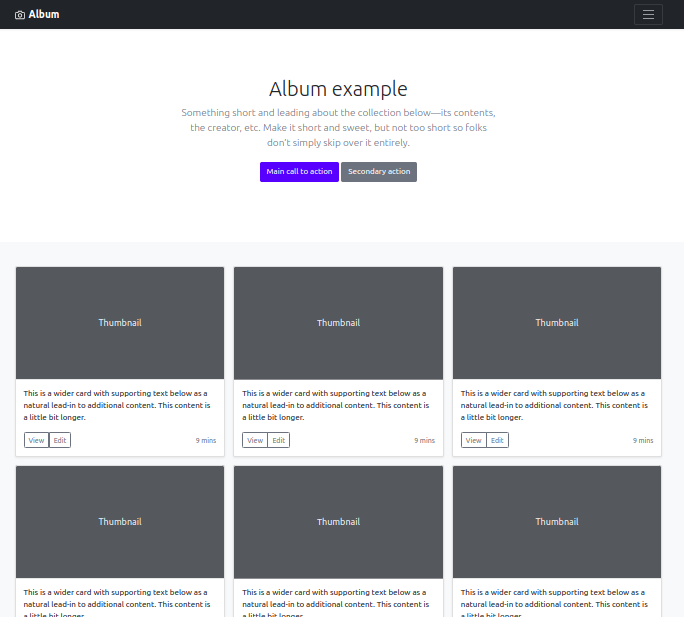
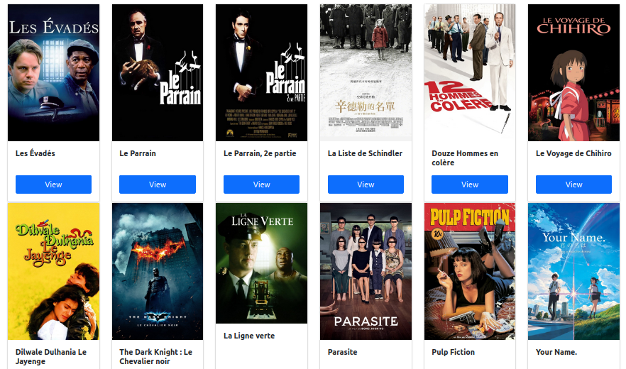
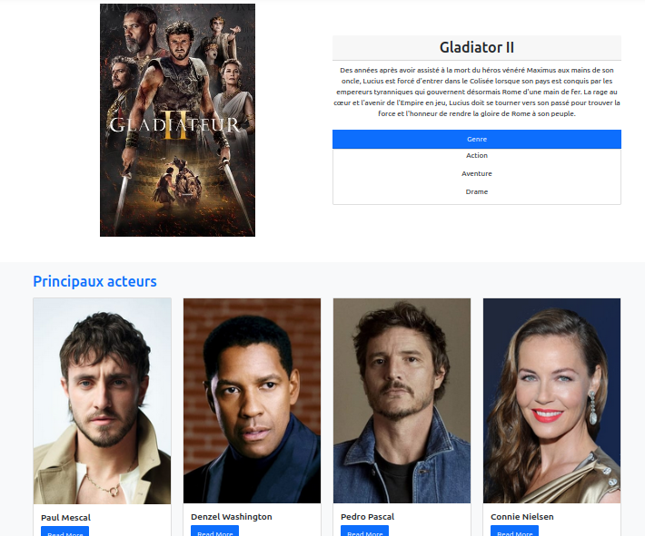

Nom de l'étudiant : NASRULLA Waleed
Le but de ce projet est de creer une petite application web qui utilise l’API TMDB (The Movie Database) pour afficher des informations sur des films. On utilise un template Bootstrap appelé Album example pour donner un look modern à l’application. Le sujet demande d’afficher les films populaires, de créer une page pour les films mieux notés (top rated) et d’ajouter un menu pour lister les films par genre. Dans cette documentation je décris chaque étape que j'ai fait, un peu comme un élève de BTS SIO première année avec quelques fautes d’orthographe.

Figure 1 : modèle Bootstrap “Album example” utilisé comme point de départ.
J’ai commencé par extraire l’archive fournie et placer les fichiers dans mon dossier de travalle.
Les fichiers principaux sont header.php, footer.php, fonctions.php et
popular.php. La page popular.php affiche déjà la liste des films les plus populaires en
utilisant la fonction popularMovies() qui est définie dans fonctions.php. Pour verifier
que tout fonctionne, j’ai ouvert cette page dans un navigateur, ce qui donne un tableau avec des cartes de films.

Figure 2 : capture d’écran de la page des films populaires.
La première tâche à faire était de créer une page qui affiche les films les mieux notés. Pour cela j’ai ajouté
une nouvelle fonction topRatedMovies() dans fonctions.php. Elle envoie une requete GET
vers l’endpoint /movie/top_rated de l’API TMDB et retourne un tableau des films.
Ensuite j’ai créé le fichier topRated.php en copiant la structure de popular.php mais
en appelant topRatedMovies() pour récupérer les données.
J’ai aussi modifié header.php pour ajouter un lien “Top Rated” dans le menu de navigation.
Ce lien permet d’accéder à la nouvelle page. Ci-dessous un exemple de rendu (illustration) :

Figure 3 : présentation de films mieux notés.
Le sujet indiquait d’ajouter un menu déroulant contenant plusieurs catégories de films. J’ai donc modifié
header.php afin d’ajouter un menu “Genre” avec les catégories suivantes : Action (28), Adventure (12),
Animation (16), Comedy (35), Crime (80), Documentary (99), Drama (18), Family (10751), Fantasy (14),
History (36), Horror (27), Music (10402), Science Fiction (878), Thriller (53), War (10752) et Western (37).
Chaque lien du menu pointe vers le nouveau fichier genreMovies.php en lui passant l’identifiant du genre
dans la query string. Pour réaliser cette page j’ai créé la fonction filmParGenre($id) dans
fonctions.php qui utilise l’endpoint /discover/movie de l’API pour récupérer les films par genre.
Dans genreMovies.php on vérifie que l’ID est présent dans l’URL, on appelle la fonction et on affiche
les films sous forme de cartes.

Figure 4 : exemple de détail d’un film et de ses genres (pour illustrer un film d’aventure).
L’API permet d’aller plus loin en affichant des fiches acteurs. En utilisant l’endpoint /person/{id}, on
peut obtenir la biographie d’un acteur et la liste de ses films. Le sujet propose d’ajouter un lien sur le nom de
chaque acteur pour afficher ces informations. Ci-dessous un exemple de ce que pourrait donner une telle page :
Figure 5 : fiche d’un acteur avec sa bio et ses principaux films.
On peut aussi implémenter un formulaire de recherche. L’API TMDB fournit les endpoints
/search/movie et /search/person qui permettent de chercher des films ou des acteurs par nom.
Dans le projet j’ai laissé deux formulaires de recherche dans le header. Pour l’instant ils ne sont pas reliés à un
script, mais on pourrait facilement envoyer la valeur saisie à une page de résultats et afficher les réponses.
Voici un exemple de résultat de recherche pour le prénom “Tom” :

Figure 6 : exemple de résultats de recherche pour “Tom”.
Ce projet m’a permis de decouvrir comment consommer une API REST en PHP et de manipuler des données JSON. J’ai aussi appris à organiser le code en séparant la partie affichage (HTML/Bootstrap) de la logique métier dans un fichier de fonctions. Grâce à l’API TMDB on peut récupérer beaucoup d’informations et enrichir encore l’application avec des bandes-annonces, des séries TV ou des filtres supplémentaires. Le site final propose d’afficher les films populaires, les films mieux notés et les films par genre avec un menu clair. Je suis satisfait du résultat, même si certaines parties peuvent être améliorées à l’avenir.